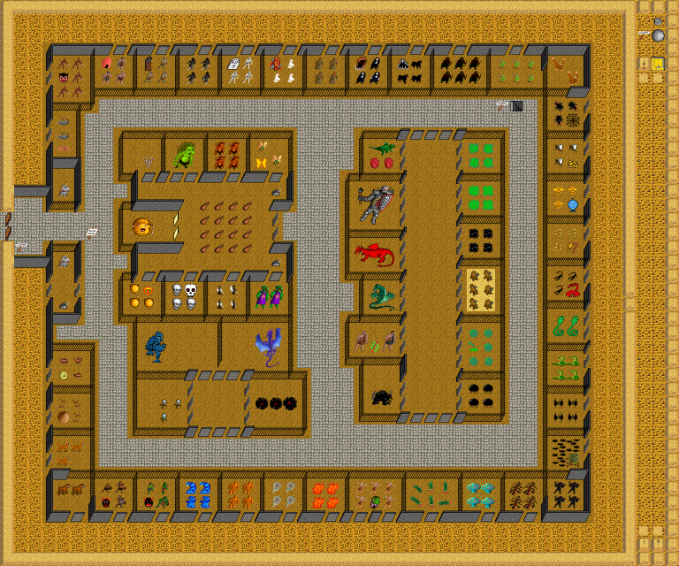

Map Zoo, in region The Kingdom of Scorn. Map level: 1.
Map view:

(click for larger view)
Exits from this map:
Exits to this map:
Monsters found on map: acid sphere, air elemental, angel, ant, ape, bat, bee, behemoth, beholder, bird, black pudding, blob, castle guard, chinese dragon, cunning gnome, dark elf, demilich, dog, dragon, dragonman, Dread, earth elemental, electric dragon, fire elemental, gaelotroll, ghost, giant bat, giant champion, giant cobra, gnoll, gnoll champion, gnoll chief, goblin, goblin champion, goblin chief, green slime, grimreaper, hill giant, killer bee, large centipede, madman, mastiff, mouse, nightmare, ogre, ogre champion, ogre chief, orc, orc champion, orc chief, panther, pixie, raas, rustmonster, scorpion, skeleton, skeleton berzerk, skeleton captain, skull, slime, small troll, snake, spider, stalker, titan, tree, troll, vampire, violent fungi, water elemental, wraith, wyvern, xan, zombie.
The Kingdom of Scorn's map index | Region index | Global map index | World map
{kind=link}